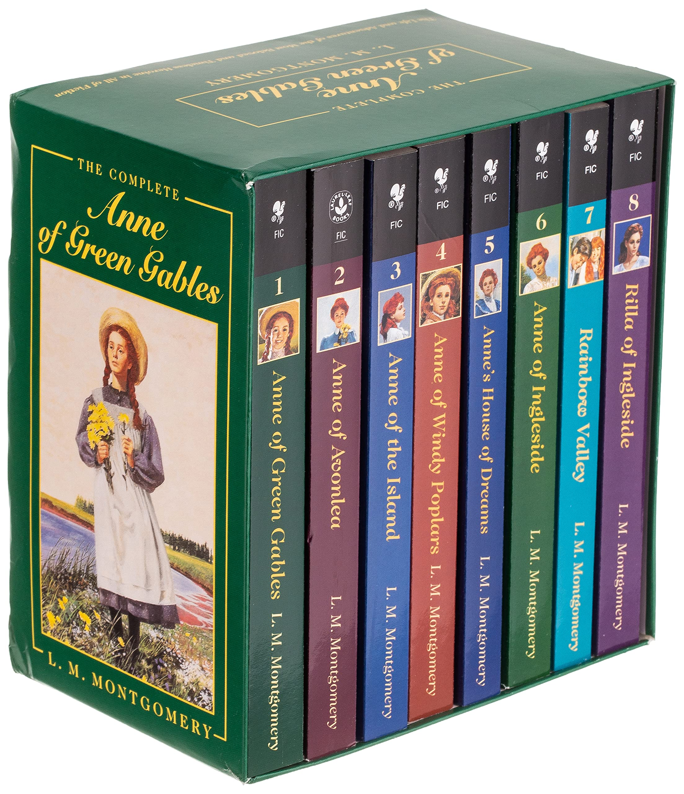
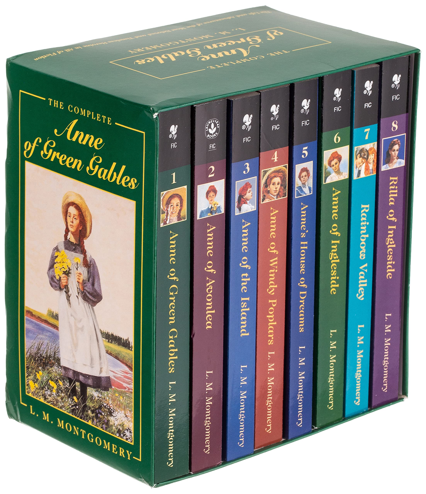

Dune: Çöl Gezegeni


Genç bir adam, anlayışının çok ötesindeki büyük kaderi ile dünyaya gelir ve ailesi ile halkının geleceğini güvence altına almak için evrendeki en tehlikeli gezegene gitmek zorundadır. Art niyetli güçler galaksideki en değerli şey olan baharat—insan yeteneklerinin doruklarına erişmesini sağlayan bir madde—için savaşmaktadır ve sadece gerçek korkularını yenebilenler hayatta kalacaktır.
Orijinal Dune veya Klasik Dune olarak bilinen orijinal kitaplar Frank Herbert tarafından yayımlanmıştır. Dune kitap serisinin ilk kitabından uyarlama olan Dune: Çöl Gezegeni, 22 Ekim 2021'de sinemalarda yayınlanmıştır.
 
